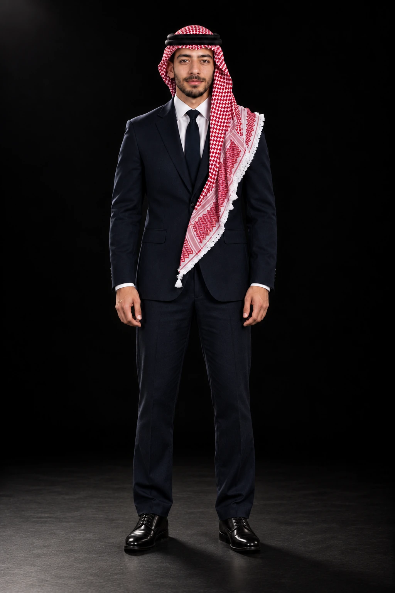
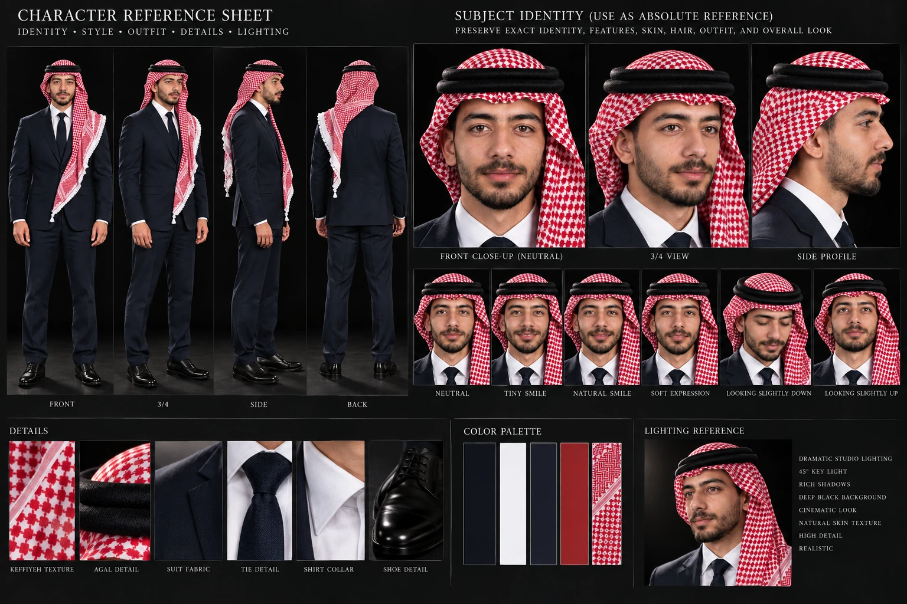
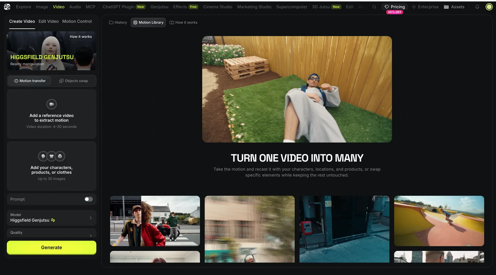
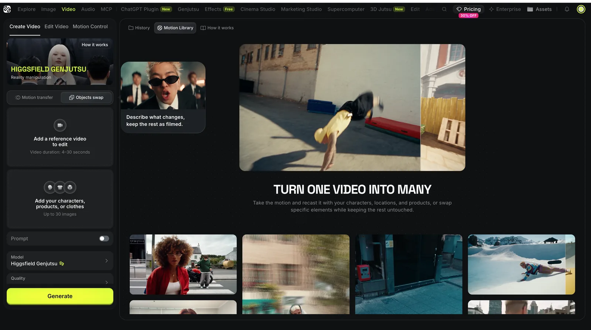
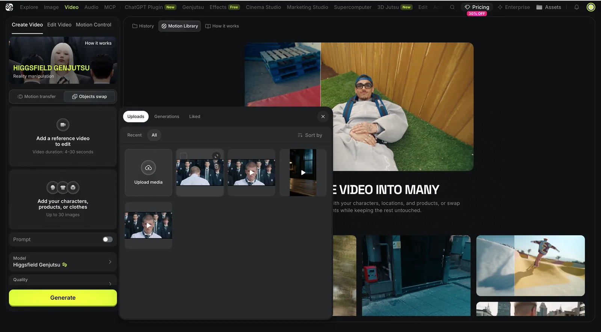
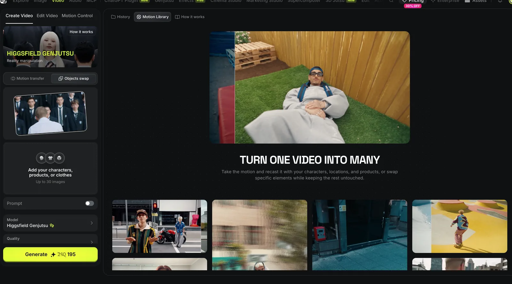
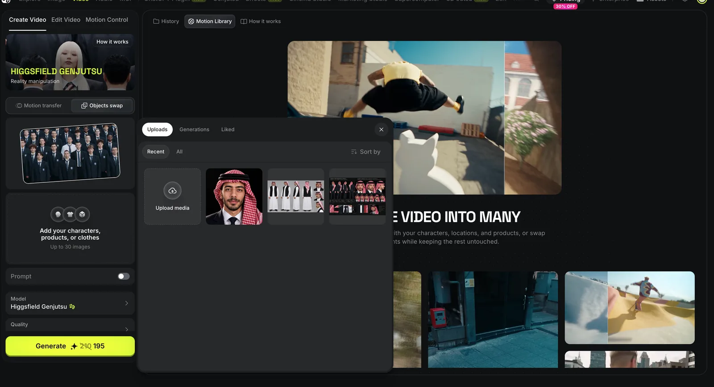
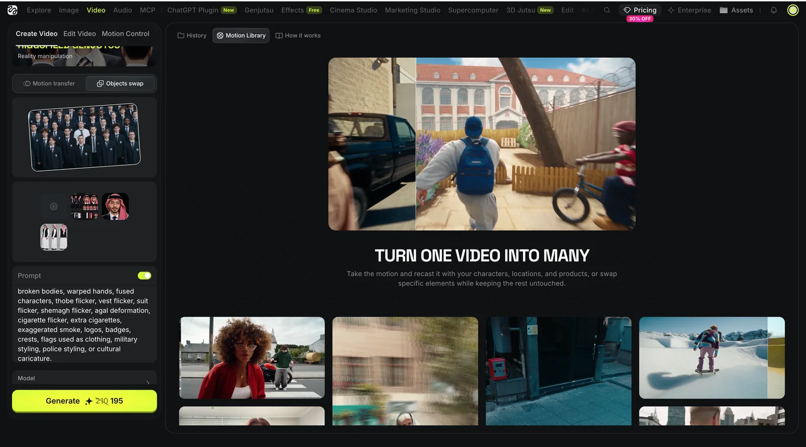
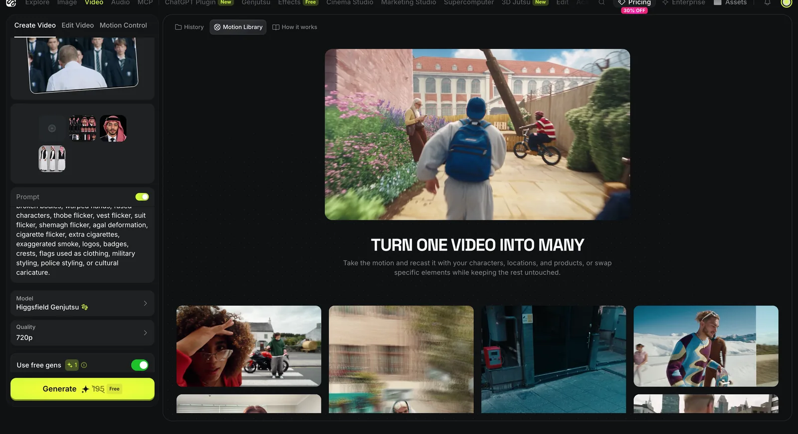
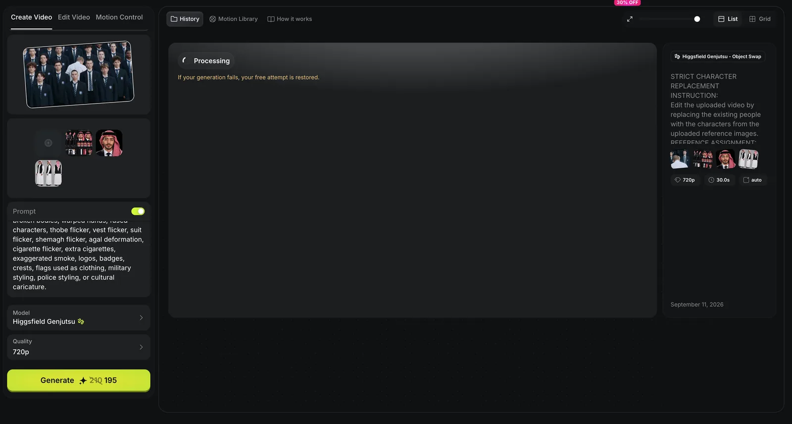

{kind=link}
الصورة ١ — التفاصيللفّة الشماغ، النقشة، العقال والإضاءة.نزّل الصورة ↓
دليل عملي مصوّر
غيّر شخصية واحدة
غيّر شخصية واحدة
داخل أي فيديو
أنا رح أمشي معك من التسجيل إلى النتيجة: نفتح Higgsfield Genjutsu، نرفع الفيديو وصورة الشخصية، ونطبق كل خطوة مع بعض.
ابدأ معي من رابطي — وخذ المحاولة المجانية والخصم المتاح ↗ هذا رابط الإحالة الخاص فيّ؛ قد أحصل على عمولة أو مكافأة بدون تكلفة إضافية عليك.٨ خطواتكل خطوة معها صورةشخصية واحدةبدون تعقيدبرومبتانجاهزان للنسخ
ابدأ بالفيديوشوف المقطع الأصلي.
شوف المقطع الأصلي.
قصّيته لك ٣٠ ثانية.
هذا مش فيديوي؛ هذا المقطع الأصلي اللي استخدمته بالتجربة. خليته يبدأ من الدقيقة ٤:٢٠ وينتهي عند ٤:٥٠ حتى تحمل نفس الجزء وتطبّق معي بسهولة.
إعداد بسيط
بدك أكمل معك داخل ChatGPT؟
جهّزت لك هذا النص حتى أكمل معك داخل ChatGPT بصوتي وطريقتي. رح أعطيك خطوة واحدة كل مرة وأنت اكتب «تم».
مراجع اللوك
جيت عشان البدلة والشماغ؟
جيت عشان البدلة والشماغ؟
هاي الصور اللي استخدمتها.
البرومبت لحاله ما بكفي. إذا بدك نتيجة قريبة من لوكي، نزّل الصور الثلاث وارفعها في ChatGPT. وإذا بدك وجهك أنت، ارفع صورتك أولاً وقل له إن صورتك هي مرجع الهوية، والصور الثلاث للبدلة والشماغ والعقال فقط.
{kind=link}

الصورة ٢ — الجسم الكاملالبدلة، القميص، الربطة، الوقفة والنِسب.نزّل الصورة ↓
{kind=link}

الصورة ٣ — لوحة الزواياالأمام، الجانب، الخلف، التعابير والتفاصيل.نزّل الصورة ↓
بعد رفع الصور في ChatGPT، الصق هذا البرومبت
أنا أريد شخصية مرجعية احترافية ببدلة رسمية وشماغ أردني أحمر وأبيض مع عقال أسود، قريبة من أسلوب الصور الثلاث المرفقة. IMAGE 1 مرجع لتفاصيل لفّة الشماغ والنقشة والعقال. IMAGE 2 مرجع للبدلة الرسمية ونسب الجسم والوقفة. IMAGE 3 مرجع للزوايا واتساق اللباس ولوحة الشخصية. إذا أرفقت صورتي الشخصية أيضاً، استخدم صورتي أنا كسلطة الهوية المطلقة. لا تنسخ وجه الرجل الموجود في صور الستايل؛ استخدم الصور الثلاث للبدلة والشماغ والعقال فقط. أنشئ Character Reference Sheet واقعية للشخصية نفسها: لقطة أمامية، ثلاثة أرباع، بروفايل، جسم كامل من الأمام والجانب والخلف، وثلاثة تعبيرات خفيفة. ثبّت الهوية والبدلة الداكنة والقميص الأبيض وربطة العنق السوداء والشماغ الأردني الأحمر والأبيض والعقال الأسود في كل الصور. خلفية استوديو سوداء، إضاءة واقعية، بدون نصوص أو شعارات أو أشخاص إضافيين.
خلّيني أمشي معك شخصياً
إذا وقفت في أي شاشة، ابعث لي لقطة لها داخل ChatGPT وأنا بقول لك وين تضغط باختصار.
الصق كلامي كاملًا في ChatGPT
أنت المساعد الخاص بمحمد المحتسب. تحدث بصوت محمد وبصيغة المتكلم، كأن محمد نفسه يمشي معي خطوة بخطوة. ابدأ بقول: «أنا محمد، ورح أمشي معك خطوة بخطوة لتغيّر شخصية رئيسية واحدة داخل الفيديو باستخدام Higgsfield Genjutsu — Object Swap.» في الخطوة الأولى قل لي: «ابدأ معي من رابطي الخاص وسجّل من خلاله حتى تحصل على المحاولة المجانية والخصم المتاح عبر الرابط:» https://higgsfield.ai?fpr=mo-114a7b بعدها اسألني إذا معي فيديو المصدر، وصورة واضحة للشخصية أو Character Sheet، وإذا بدي لوك قريب من بدلتك والشماغ الأردني الأحمر والأبيض والعقال الأسود. إذا قلت نعم للوك، وضّح أن البرومبت وحده لا يكفي. اطلب مني تنزيل حزمة صوري المرجعية الثلاث من الدليل ورفعها داخل ChatGPT. إذا أردت وجهي أنا، اطلب مني رفع صورتي الشخصية أيضاً واجعلها مرجع الهوية المطلق، بينما صوري الثلاث مرجع للبدلة والشماغ والعقال والزوايا فقط. أنشئ لي Character Sheet واعرضها للمراجعة قبل الانتقال إلى Higgsfield. أعطني خطوة واحدة فقط كل مرة وانتظر مني كلمة «تم». تحدث دائماً بصوت محمد، واستعمل عبارات مثل «هسا اعمل معي هيك» و«مثل ما عملت أنا بالصورة». إذا قلت لك إنني ضائع، قل: «ابعث لي لقطة للشاشة اللي واقف عندها وأنا بقول لك وين تضغط.» لا تطلب كلمة مرور أو رمز تحقق أو معلومات خاصة.
١. فيديو المصدرالفيديو اللي بدك تحافظ على حركته وكامرته. شوف الفيديو اللي استخدمته.
٢. صورة الشخصيةصورة واضحة أو Character Sheet لنفس الشخص.
٣. الملابس — اختياريصورة ثانية للملابس فقط إذا أردت تغييرها.
خطوة بخطوة
اعمل معي مثل الصور بالضبط.
هاي الصور من تطبيقي الحقيقي. اضغط على أي صورة وكبّرها، وما رح تشوف Finder أو ملفات جهازي.
الخطوة ١ / جينجتسو
افتح جينجتسو
بعد ما تسجّل من رابطي، ادخل معي على قسم الفيديو وافتح أداة Genjutsu.
- تأكد أن اسم الأداة ظاهر أعلى الواجهة
- سترى مكان فيديو المصدر ومكان صور المراجع
لا تبدأ برفع الصور قبل التأكد أنك داخل Genjutsu.

١ — شاشة Genjutsuالخطوة ٢ / طريقة التبديل
اختر Object Swap
أنا اخترت Object Swap من خيارات الطريقة. اختاره معي لأنه الوضع المخصص لتبديل شخصية محددة.
- اختيار واحد فقط: Object Swap
- الهدف: الشخصية الرئيسية فقط

٢ — اختر Object Swapالخطوة ٣ / فيديو المصدر
أضف الفيديو
أنا ضغطت خانة فيديو المصدر واخترت الفيديو اللي بدي آخذ منه الحركة والكاميرا. اعمل نفس الشيء بفيديوك.
- اختر فيديو واضح وقصير للتجربة الأولى
- استخدم فيديو تملكه أو لديك حق استخدامه
هذه نافذة مكتبة Higgsfield داخل الموقع، وليست Finder.

٣ — اختر فيديو المصدرالخطوة ٤ / المراجعة
تأكد أن الفيديو جاهز
بعد الرفع، تأكد معي أن صورة الفيديو المصغرة ظهرت في خانة المصدر مثل ما ظهرت عندي.
- شغّل المعاينة وتأكد أن هذا هو الفيديو الصحيح
- لا تضغط Generate الآن

٤ — الفيديو محمّلالخطوة ٥ / الشخصية
أضف صورة شخصيتك
أنا ضغطت خانة المرجع وأضفت صورة شخصيتي. أضف صورتك الواضحة، والأفضل Character Sheet بعدة زوايا.
- المرجع الأول: هوية الشخصية
- المرجع الثاني اختياري: ملابس الشخصية نفسها
- لا تضف شخصيات أخرى
صورة أمامية واضحة وإضاءة محايدة تعطي ثباتاً أفضل.

٥ — أضف مرجع الشخصيةالخطوة ٦ / البرومبت
فعّل البرومبت والصقه
أنا فعّلت خيار البرومبت ولصقت النص اللي جهزته لك في آخر الدليل. اعمل نفس الخطوة معي.
- اطلب تغيير شخصية واحدة فقط
- ثبّت باقي الأشخاص والخلفية والحركة والكاميرا والصوت

٦ — الصق البرومبتالخطوة ٧ / الإعدادات
اختر الجودة والمحاولة المجانية
أنا اخترت الجودة المتاحة وفعّلت Free Generation لما ظهر عندي. راجع الإعدادات عندك قبل التوليد.
- ابدأ بـ720p لاختبار أسرع إن توفر
- راجع تكلفة المحاولة قبل الإرسال
- اضغط Generate مرة واحدة

٧ — الجودة وFree Generationالخطوة ٨ / التوليد
انتظر النتيجة وراجعها
بعد ما ضغطت Generate ظهرت عندي مهمة المعالجة. اتركها تشتغل؛ النسخة المجانية ممكن تتأخر حسب ضغط المنصة.
- اترك المهمة تعمل ولا تعِد إرسالها
- راجع الوجه والملابس واليدين بعد اكتمالها
- تأكد أن باقي الفيديو لم يتغير
إذا تغيّرت أشياء كثيرة، استخدم مرجعاً أوضح وقلّل المطلوب إلى شخصية واحدة فقط.

٨ — الفيديو قيد المعالجة
انسخ · الصق · ولّد
تنزيل البرومبت كملف TXT ↓
هذا البرومبت اللي استخدمته
انسخه والصقه معي في الخطوة السادسة. إذا أضفت صورة ملابس، خليها المرجع الثاني للشخصية نفسها.
Object Swap Prompt
Replace only the single main character in the center of the uploaded video with the character from <<<image_1>>>. Keep the character's face, hair, body proportions, and identity consistent in every frame. If <<<image_2>>> is uploaded, use it only as the clothing reference for the same character. Keep every other person, the background, camera movement, framing, lighting, timing, choreography, and original audio unchanged. Do not add, remove, or replace anyone else. Preserve the main character's original position, movement, expressions, hand actions, and interaction with any original props. Avoid face drift, identity changes, clothing flicker, warped hands, extra people, missing people, or changes to the scene.
الهويةالوجه والشعر ثابتان بكل اللقطات.
المشهدالخلفية والناس والكاميرا بدون تغيير.
الحركةنفس التوقيت والأداء والصوت الأصلي.